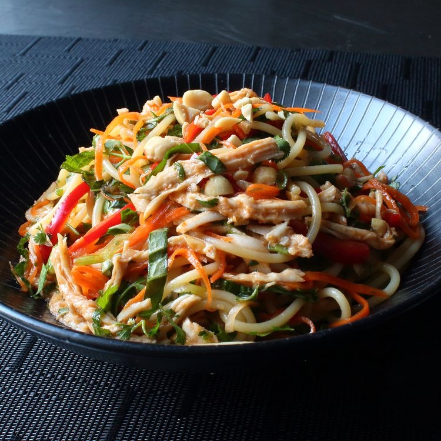

Chicken Noodle Salad

Description
Get ready to make all sorts of friends when you bring a big bowl of this Asian chicken noodle salad to the next big cookout. The only folks you might scare away are the ones who brought regular pasta salads. There's just something delightfully addictive about this special combination of cold and spicy. This recipe is the perfect catchall for all those summer vegetables we're supposed to be eating more of, as well as any dry leftover chicken you have around.
Ingredients
- 3 cloves garlic, crushed
- ½ cup seasoned rice vinegar
- 5 tbsp sauces
- 1 tsp sesame oil
- 1 cooked chicken breast
- 8 ounce spaghetti
- Vegetables
- Herbs
Steps
- Whisk garlic, rice vinegar, soy sauce, fish sauce, brown sugar, Sriracha, hoisin, and sesame oil together in a mixing bowl for the dressing.
- Tear chicken apart into strands similar in width to the spaghetti. Refrigerate until ready to use.
- Bring a large pot of lightly salted water to a boil. Cook spaghetti in the boiling water, stirring occasionally, until tender yet firm to the bite, about 12 minutes. Drain and rinse with cold water.
- Transfer spaghetti to a mixing bowl; add the chicken, carrots, bell pepper, and green onions. Pour in the dressing and toss by hand until well combined. Seal the surface of the salad with plastic wrap and refrigerate, tossing occasionally, for 2 to 12 hours, the longer the better.
- Add peanuts, basil, mint, and cilantro to the salad. Toss well; taste and adjust for seasoning.